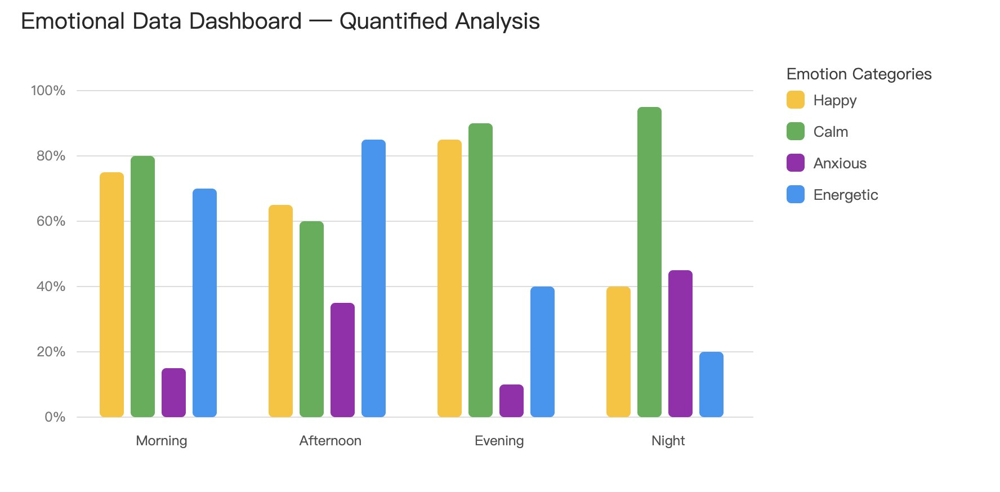
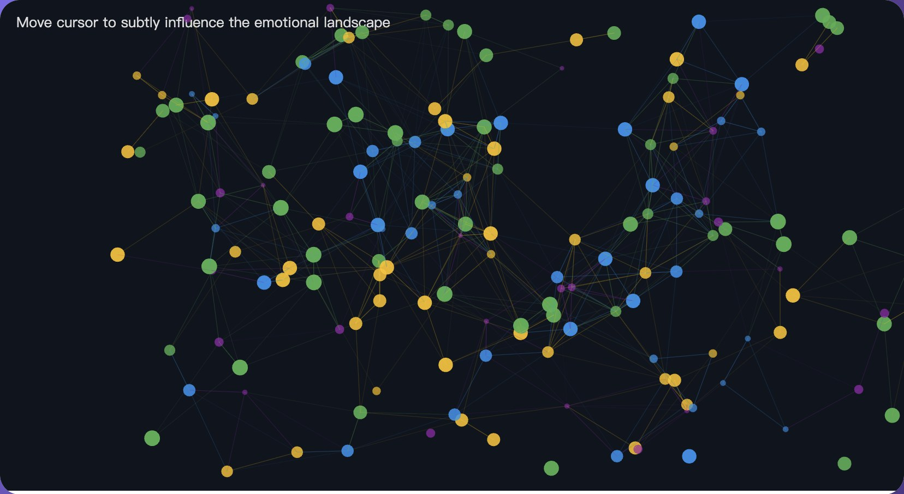

Emotional Dialectics
Platforms turn feelings into numbers. Emotional Dialectics shows the same dataset of emotions in two ways: a quantified dashboard of bars and percentages, and an experiential landscape of drifting particles. Switching between them asks what each way of seeing gains and loses.

The idea
In a platform society, complex emotional states are converted into measurable, comparable data points. This piece is not a tool for analysing emotions. It asks how the form of a visualisation shapes what we understand an emotion to be, touching on dataism, affective computing and the limits of computers in expressing human feeling.
Two views of the same data
The dataset records four emotions (happy, calm, anxious, energetic) at four times of day, each scored from 0 to 100.
- Dashboard: a grouped bar chart on a percentage scale, with a legend. Clear and comparable, and flat.
- Landscape: every value becomes particles. Higher scores mean more, larger and more opaque particles; calm slows the whole field, anxiety adds turbulence, and nearby particles link with faint lines. Moving the cursor nudges the forces but never takes control of them.

Looking back
Writing code for the two modes felt like writing for two purposes: one for precision and efficiency, the other for uncertainty and openness. Numerical accuracy gives a reassuring sense of certainty, but it flattens how rich and complicated real emotional experience is.
The piece runs on static simulated data rather than a live social media feed, for reasons of complexity and stability. A next version could use real-time sentiment data, or let viewers decide how values shape the visuals.